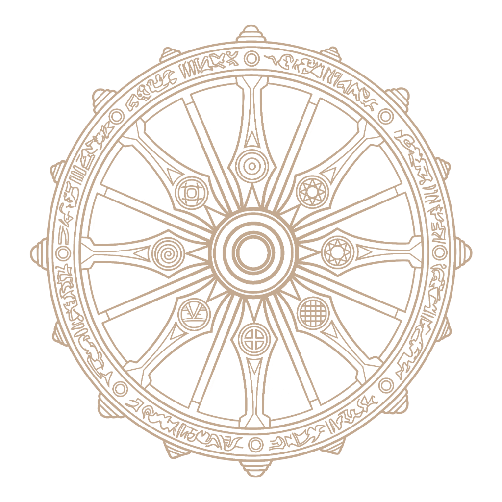

01
What Is Pahari Art?
Pahari painting is a tradition of miniature painting that flourished in the Himalayan foothills of North India, celebrating intense emotional resonance, delicate naturalism, and timeless spiritual devotion.


ଏକ ମାତ୍ର ପ୍ରୟାସ
01
Pahari painting is a tradition of miniature painting that flourished in the Himalayan foothills of North India, celebrating intense emotional resonance, delicate naturalism, and timeless spiritual devotion.
02
The origins of Pahari painting lie in the decline of the Mughal Empire and the migration of skilled atelier artists to the tranquil, mountain-guarded valleys of northern India.

03
Basohli, Guler, Kangra, Chamba, and Mandi each shaped unique visual languages — from vibrant unmixed pigments and beetle-wing jewel effects to soft poetic lyrical realism.

04
Love, devotion, musical modes (Ragamala), poetry, and mythology became the living soul of Pahari art, capturing the intimate dialogue between human sentiment and cosmic beauty.

05
Today, Pahari paintings are celebrated worldwide in premier museums as enduring masterpieces of poetic storytelling, fine draughtsmanship, and transcendent aesthetic grace.

Most Pahari paintings were executed on wasli — a laminated sheet made by pasting several layers of paper together, then rubbing the surface smooth with a polished agate stone until it acquired a near-enamelled finish.
The colours of Pahari painting were not bought from a shop. They were prepared: lapis lazuli from Afghanistan, vermilion from purified cinnabar, white from conch shell, and gold beaten to impossible thinness.
The brushes of Pahari painting were made from the fine tail hairs of squirrels. The finest brushes contained as few as three or four hairs, capable of drawing a line finer than human hair.
The painting began with a preliminary sketch in charcoal or light red, refined through master transfers, then outlined in permanent ink before color began.
Colour was applied in delicate layers: flat washes first, then meticulous tonal modelling, followed by micro-strokes defining fabric textures and botanical life.
Pure gold was applied with fine gum medium for jewellery, halo outlines, and architecture, then burnished with agate stone to achieve a mirror-bright metal gleam.
Painting in the Pahari courts was a sacred hereditary profession. Master families passed secrets across generations, dedicated entirely to the perfection of emotional vision.